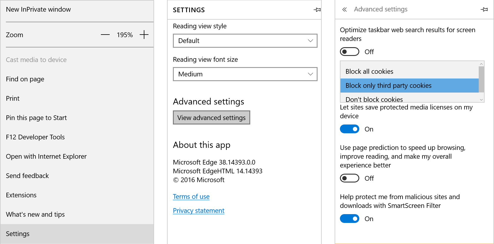

Definimos las cookies como unas “armas” de doble filo, ya que por una parte, gracias a ellas los usuario pueden tener una ruta más guiada y personalizada a la hora de navegar, pero por otra parte, tiene un gran riesgo ante nuestra privacidad.
Frente a estos casos la compañía rusa Kaspersky, dedicada a la seguridad informática han realizado un listado de consejos para evitar que sus intimidad se vea comprometida por las cookies.
Nada tan sencillo como eliminar el historial de navegación y las cookies al acabar la sesión. Sin embargo, si somos olvidadizos o perezosos, existen otras soluciones como la herramienta de limpieza de PURE 3.0.
De tal manera que tengas el control sobre la información que rastrean las cookies. Accede a los ajustes de privacidad de tu navegador y configura sus opciones. Por ejemplo, Firefox y Safari ofrecen un mayor control sobre esa información.
Utilizando esta herramienta del navegador podremos gestionar las cookies de manera más específica, e incluso activar sólo aquellas con las que queramos compartir nuestra información online.
Es conveniente no publicar datos personales en sitios donde las cookies pueden almacenarlos y hay que recordar siempre no dejar abierta ninguna cuenta o sesión.
Tener instalada una buena aplicación de seguridad es la última defensa ante cualquier ataque y nos permitirá tener el control de nuestra privacidad. como Kaspersky Internet Security Multi-Dispositivo.
Haz click en el menú desplegable de la parte superior derecha y selecciona Configuración → Mostrar configuración avanzada → Configuración de contenido.
En la sección Cookies, elige Conservar datos locales solo hasta que salgas del navegador.
Marca la casilla Bloquear los datos de sitios y las cookies de terceros.
Haz click en el menú de la esquina superior derecha y selecciona Opciones. Elige Privacidad en el panel izquierdo.
Dentro de Historial, selecciona Usar una configuración personalizada para el historial del menú desplegable, luego selecciona Nunca en la opción Aceptar las cookies de terceras partes.
Luego establece Mantener hasta que con la opción cierre Firefox.
Haz click en el menú desplegable de la esquina superior derecha y selecciona Opciones de Internet. En la pestaña Privacidad, haz click en Avanzada.
Marca la casilla Sustituir la gestión automática de cookies.
Elige Bloquear para las Cookies de terceros y activa la casilla Activar siempre las cookies de sesión.
Haz click en el menú desplegable de la esquina superior derecha y selecciona Configuración.
Dentro de Borrar datos de navegación, haz click en Elegir lo que se debe borrar. Selecciona Cookies y datos de sitio web guardados y cualquier otro tipo de dato que quieras borrar y haz click en la opción Borrar.
Haz click en las flechas superiores que apuntan a la izquierda para volver al menú principal de Configuración.
Desciende y haz click en Ver configuración avanzada. Desciende hasta las opciones de las cookies y selecciona Bloquear las cookies de terceros.
Haz click Preferencias de Safari, y dirígete hasta la pestaña Privacidad.
La primera opción que nos muestra la configuración de Privacidad de Safari, es la que os he comentado respecto a la función que limita el seguimiento que hacen las páginas web sobre nuestra navegación, función que ha llegado de la mano de macOS High Sierra.
Para acceder a todas las cookies que Safari ha almacenado sobre nuestra navegación y las páginas web que visitamos, debemos pulsar en Gestionar datos de sitios web.